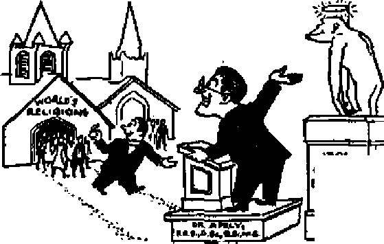
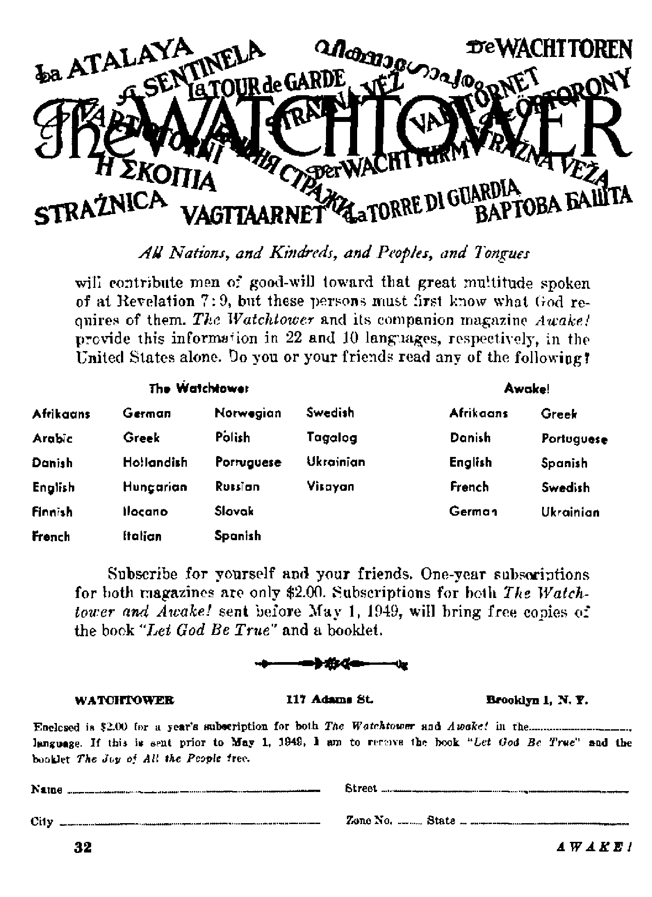

Fairy tales and pagan myths masquerade as science
Well, sick, or dying ? World’s doctors can’t agree
Gliding is like tobogganing on a cloud
More to them than meets the foot
THE MISSION OF THIS JOURNAL
News source* that arc able to keep you Awoke io th* vital tatues of our time* must be unfettered by censorship and selfish interests. "Awake!” has no fetters. It recognize* facts, faces fact*, is free to publish facts. .It 15 not bound by political arnbitions or obligations; it is unhampered by advertisers whose iocs must not be tread upon; it is unprejudiced by traditional creeds. This journal keeps itself free that it may speak freely io you. But it does not abuse its freedom. Xi maintains integrity io truth.
M Awake I” uses the regular news channels, but is not dependent on them. Its own correspondents are on aJi continents, tn scores of national. From the four corners of the earth their uncensored, on-the-* scenes reports come to you through these columns. This journal's viewpoint is not narrow, but is international. It is read in many nations, in many languages, by persons of all ages. Through it* pages many fields of knowledge pass ih review—government, commerce, religion, history, geography, science, social conditions, natural wonders—why, its coverage is as broad as the earth and as high as the heavens.
"Awake I” pledges itself io righteous principles, to exposing hidden foes and subtle dangers, to championing freedom for all, to comforting mourners and strengthening those disheartened by the failures of a delinquent world, reflecting sure hope for the establishment of a righteous New World.
Get acquainted with “Awake I” Keep awake by reading “Awake!”
Publish cd Semimonthlt Bt WATCHTOWER BIBLE AND TRACT SOCIETY. INC.
117 Adams Str^t Brooklyn 1, N. Y.r U. S. A.
X a 5*0**, GtAHT SL’ITXl,
Flvf canta a cofty Ona rfattir a ynr
te Mtt to a«et te yev^wn-try in »v[:lUw w.t* rtftUtUo* U gwifiQM ■aft ddlwr it *mw. IvattUMM tn* MtMpttd at Ann cnuitdM wtit* » ii louMd. hj liL4rn»tntja] »«*•? <xd*f «■!?. Sutesrir<ic« rite* in <nfu*5C tent 1* foal
turrtMp. ■
SJtlN at artrtltt (»hi fwm! tlKk) 1* *tnt at to; iw tew Infer* aeteajpUM W5*™*-
u n*tt*r it IrfaMn. B.
Cbtef* «t *Mt«N *t*C *tm to 4UT o*C* U7 te ntttfcd <eotiv« vltbia m wioatb. B<«< your o.d m »*tt m aw *Olrw*
44fccc TmiV tiataKiVtiM lata
Jtaarka, 11T a^juw Si.. BrnttUn I h'.T- H *wtri«i, r KmCerd M, Buiztte’d, P 8.W. At C*M4«, +0 Inrfo Am. . Tangelo 6. OiUrW tl E*fHM' 34 CmTO TtTr»t*, Loo4«a, W, S fa te«U AItIm, 813 Butoo Bow. c*p* two fa
Aa ot Mudi ft. lift. Wj«1 Sc U, li
CONTENTS
Evolutionists Are Old Fogies
“Give Me that Old Time Religion"
It s Good Enough for Orthodox Ctergy
O1(L fashioned World Blind to the Times
Taking the Ptttae of the United Nations
Some Want to Operate
Is the I'. N. Dying!
Title Trouble
Inkles^ Printing
Hitching a Ride on the Wind
The Glider in Aviation History
Storm Flight and Latest Glider Records
3
4
6
7
9
10
10
12
12
13
14
Sunny Spain!
Old Spanish Customs
Oppressive Rackets
Rags Have the Floor
The Low-dcrwn on Modern Rugs
Rug Materials from Afar
Men Can Sme!l Sweet, Tuol
Winged Words
'Thy Word Is Truth”
Parental Curbs Against Juvenile Delinquency
Watching the World
17
IB
19
20
21
22
23
24
25
29
^“Now it is high. time to awake.— Romans 13:119)
Volume XXX
Brooklyn, N.Y*, February 8, 1848
Numbers
EVOLUTIONISTS ARE OLD FOGIES
EVOLUTIONISTS take pride in their back in the bogs of a n ti q u i t y r „ no modernism. They rocket ahead to is it that is Seeping in ignorance pierce new frontiers of knowledge, gra- ' ‘ ‘ ‘ ~ ‘
ciously leaving their brilliance in their
wake that others might see to follow their newly blazed trails. They are not shackled by superstition, bound by myth, snared by religion, anchored by ignorance, or stopped in their tracks by old-fashioned thinking and gullibility. Oh, no! they would never retard their fast forward steps by hanging the Bible around their necks like a millstone. With smears and sneers and contempt they cast it aside as garbage for the mentally impoverished to pick over, for the simple folk who know no better to chew on. With the haughty pride that precedes falls, the evolutionists congratulate themselves on their great wisdom and superiority and rejoice that they are not gullible victims of ancient ignorance and myth. They smack of the “holier than thou” Pharisee that thanked God he was not like the publican.—Luke 18:10-14,
But just how modern is this puffed-up evolutionist that sits in his empty glass house throwing stones at Bible believers! Just which one believes mythology! Who babbles the fancies of fairy tales! Who is soaked in superstition and heathen religion! Who thinks he is traveling so fast, but is actually stranded, stalled
of the most vital knowledge of modem times! Just who is the old-fashioned fogy! Whose charges boomerang! Whose words return void to find fulfillment in the one that spoke them!
Evolution teaches that from a single remote ancestor, a one-celled speck of protoplasm that somehow spontaneously generated itfeelf in sea slime hundreds of millions of years agoT has evolved all the living things of today. The single-celled beginning grabbed its bootstraps and lifted itself into an invertebrate, then hoisted itself successively through fish, amphibian, reptile and quadruped stages, and thence scrambled up the ladder of evolution, with little more than a whistle stop at the rung of some primitive ape form, till it reached humari status. And it is still scrambling, still screaming, “I don’t know where fm going, but I’m going !” How modern is the theory!
Evolution Rooted in Pagan Religions
It was taught in the fifth century B.C. The Greek philosopher Empedocles (493435 B.C.) has been called “the father of the evolution idea”, Aristotle taught it, and the Greek philosophers generally preached it. Note how many of the basic beliefs in the present time-worn and polished theory were present in the rough some twenty-three centuries ago, according to The Encyclopedia Americana, volume 10, page 606, 1942 edition:
Empedocles . . . believed in spontaneous generation as the explanation of the origin of life, and he believed that different forms of life were not produced simultaneously. Plant life came first and animal life only after a long series of trials, but the origin of the organisms was a very gradual process. ^All organisms arose through the fortuitous play of the two great forces of nature upon the four elements. Thus, animals first appeared not as complete individuals, but as heads without necks, arms without shoulders, eyes without their sockets. As a result of the triumph of love over hkte, these parts began to seek each other and unite, but purely fortuitously. Thus out of this confused play of bodies all kinds of accidental and extraordinary beings arose.” But the unnatural products soon became extinct because they were not capable df propagation. After the extinction of these monsters other forms arose which were able to support themselves and multiply. Thus, if one cares to, one may see in the ideas of Empedocles the germ of the theory of the survival of the fittest, or natural selection,
Aristotle (334-322 B.C.), the greatest of the Greek natural philosophers . . . Nature, he says, proceeds constantly by the aid of gradual transitions from the most imperfect to the most perfect . . . Man is the highest pofit of one long and continuous ascent. . . . The Greeks, taken altogether, suggested more or less crudely the idea of theA gradual development of organisms, the idea of the elimination of mistakes in production, and therefore the idea of the survival of the fittest, the idea of the adaptation of parts.
It has been suggested that the Greek philosophers gleaned their evolution .theory from the Hindus,, who had the soul evolving and transforming from one animal to another till it reached the pinnacle state of nirvana. Six hundred years before Christ the Mayan culture began, and its religion taught a streamlined evolution, saying that the rain-god made man in this order: a river, a fish, a serpent, and then man. Note that modern evolution teaches that water brought forth life, and that fish and serpent are steps to man. Evolution is routed in the heathen religions and mythologies and superstitions of centuries before Christ.
And is it not the evolutionist that is the gullible gobbler of fairy tales! Is it not the fairy tales that deal copiously with physical transformations! that tell us of children turned into spiders and back again? of mice becoming horses and lifcards becoming men to serve Cinderella! Of course, the evolutionist’s transformations are fables more cunningly devised, and instead of popping in on the wings of a witch's spell or magic potion or the wave of a wand they steal in so slowly that in comparison a snail's pace" would appear as the lightning's flash. Evolutionist W. Beebe writes (The Bird, page 97): “The idea of miraculous change, which is supposed to be an exclusive prerogative of fairy tales, is a common phenomenon of evolution/' Dr. McNair Wilson, formerly editor of the Oxfor^ Medical Publications, observed that’ evolution is “a theory which is as full of ogres, mermaids and centaurs as any fairy tale”. It is the evolutionist that suffers hangovers of childhood, when he .was intoxicated by the fantastic fairy tales.
*Give Me that Old Time Religion”
Why, then, do the majority of scientists accept the theory of evolution! Because it has been proved! No; it has not been proved, and most scientists will admit that. Some fanatically advance the theory to teardown faith in the Bible account of creation. By some strange reasoning process they believe that their professional reputation as scientists demands their allegiance to evolution, demands profession of their faith in it. But it is not the faith that comes from hearing evidence and gaining knowledge and producing works, as is the true Christian’s faith. It is a blind, credulous faith, a'faith without works that is dead. It is a faith induced by fear, fear of fellow scientists and what they might think if one does not accept the orthodox doctrine of evolution.. So with typical religious zeal the rabid evolutionists wrest evidence to prove their theory, just as the hypocritical clergy of Christendom wrest the Scriptures to fit their traditional creeds and dogmas. To prove their orthodoxy many scientists become unscientific. But even within the evolution-olatry sect there are many divisions and contentions. The foregoing will be established by the following series of documented quotations, some from evolutionists, some not, but all from scientists.
Evolution is unproved and unp rovable. We believe it only because the only alternative is special creation, and that is unthinkable.—Sir Arthur Keith, Hunterian professor of the Royal College of Surgeons of England and former president of the Royal Anthropological Institute.
Evolution itself is accepted by zoologists, not because it has been observed to occur or . . . can be proved by logically coherent evidence to be true, but because the only alternative, special creation, is clearly incredible. —Professor. D, M. S. Watson, F.R.S., of the University of London.
We all, even the youngest of us, profess to accept the doctrine of evolution, if only as a convenient weapon with which to meet the fundamentalists.—Dr. W, T, Caiman, F.R.S., formerly keeper of zoology in the British Museum.
One of my university students once said to me: “We are determined to believe evolution, not because it is true nor that we believe there is any evidence for it, but because it has become the symbol of our liberalism.”—Professor A. P, Kelley, director of the Landehberg Laboratory,
I repeatedly observed the dissausiaeuon in the minds of students over the existing "proof” for evolution, The thing which repeatedly won them over to acceptance of the theory was sheer weight .of authority on the part of scientists through a not always highly refined method of brow-beating. If the young aspirant was to keep face with the more seasoned scientists, he was obliged to accept the evolution theory.—Professor F. L. Marsh, of Union College.
Evolution is very highly prized by biologists, for many of whom it is an object of genuinely religious devotion.—Dr. W. R. Thompson, F.R.S., assistant director of the Imperial Institute of Entomology.
Evolution is a kind of dogma which the priests no longer believe, but which they maintain for their people.—Professor P. Lemoine (obit. 1943), formerly director of the ^Museum of Natural History, Paris.
To believe either one of these [evolution] doctrines in the present state of science is simply an act of faith, not that kind which is based on testimony or evidence, however slight, but of that unreasoning kind which we usually stigmatize as mere credulity and superstition.—Sir J. W. Dawson, F.R.S. (obit. 1899), professor of geology and principal of McGill University.
The more one studies palaeontology, the more certain one becomes that evolution is based on faith alone; exactly the same sort of faith which it is necessary to have when one encounters the great mysteries of religion. —Professor T. L. More, University of Cincinnati.
Though we ipust hold io our faith in the evolution of species there is little evidence as to how it came about, and no clear proof that the process is continuing in any considerable degree at the present time. . . . Meanwhile, though our faith in evolution stands unshaken, we have no acceptable account of the origin of species. . . . Let us then proclaim in precise and unmistakable language .that our faith in evolution is unshaken.—Professor W. Bateson, F.R.S. (obit. 1926), Cambridge.
Set evolution remains—we cannot get away from it, even if we hold it only as an act of faith, for there is no alternative,—Professor D. H. Scott.
Evolution has thus descended to a mere belief, an article of faith, and faith without works is dead,—Dr. J. Knight, F.R.S.E. (obit. 1939) r formerly president of the Royal Philosophical Society of Glasgow.
What is it [evolutionJ based upon? Upon nothing whatever but faith, upon belief in the reality of the unseen—belief in the fossils that cannot be produced, belief in the embryologies! evidence that does not exist, belief in the breeding experiments that refuse to come off. It is faith unjustified by works. —A. N. Field, New Zealand journalist and author and editor of the Examiner.
We want to know where we are: faith, as Dr. Bateson says, has given place to agnosticism: it is necessary to start afresh, to see things as they are, and not as we think they should be.—Sir A. Seward, F.R.S. (obit. 1941), of Cambridge University.
The whole battleground of evolution will have to be fought over again; this time not so much between scientists and theologians as among scientists themselves.—Professor W. E. Ritter (obit. 1944), of the University of California.
The average biologist, accepting as he does evolution as a creed, fails, when writing, to distinguish between established fact and theory, and, in consequence, sets forth theories as if they were proved truths. In my view such procedure is inexcusable in a treatise dealing with any science.—Douglas Dewar, F.Z.S., British naturalist.
The modern evolutionist matches in zeal the screaming evangelist in tent-meeting revivals. His crooked tongue and poisoned pen belch out a flood of propaganda to fill the earth and convert the world. All channels of information keep the stream flowing, and multitudes that know nothing of the unfounded theory accept it through a credulous faith in the infallibility of science. Just as millions of religionists follow their clergy, so millions of evolutionists follow unquestioningly the scientific hierarchy. Any that think for themselves, that ask for proof, are shouted down as heretics. Just as the clergy say that some of their unexplainable doctrines, such as “trinity", are mysteries, so one scientist said concerning the origin of species, “It is a great mystery ” The laity should not try to think, but should just follow. And as the evolution revivalists shout to make you hit the sawdust trail the congregation bursts into singing the spiritual, “Give Me that Old Time Religion.” How the rafters ring as they sing!—“It was good enough for the heathen Hindus, it was good enough for the gullible Greeks, it was good enough for the pagan Mayans, it was good enough for fairy tales, and it's good enough for me!”
It's Good Enough for Orthodox Clergy
The clergy of Christendom and Jewry swing their bodies and stamp their feet and get in step with science as they take up the chant. If the scientists can swallow evolution, so can the clergy. Why, who have bigger mouths and more expanded bellies? Have they not demonstrated that they can swallow paganism, by their gobbling up such heathen doctrines as “trinity”, “inherent immortality of the soul,” “masses for the dead,” “purgatory” for the sinners and “hellfire” for the damned! After all that practice to perfect them, certainly they can stomach the pagan dogma of evolution! In fact, some Catholic Church “saints” beat sciencb to this pagan delicacy. Note what the Catholic Encyclopedia, volume V, pages 654, 655, edition of 1909, says, under “Evolution”:
It is in perfect agreement with the Christian conception of the universe; for Scripture does not tell us in what form the present species of plants and of animals were originally created by God. As early as 1877 Knaben-bauer stated “that there is no objection, so far as faith is concerned, to assuming the de-
went of alFplant and ammai species from a few types” '(Stimmen aus Maria Laaeh, XIII, p. 72). , . . To what extent is the theory of evolution applicable to man!—That God should have made use of natural, evolutionary, original causes in the production of man's body, is per se not improbably and was propctmded by St. Augustine. [Augustine of Hippo, A.D. 354-430] '
evolution
was an
WOL 0* m tWXMTVH
CULT
Thus from the very birth of Catholicism (Augustine died ten years before Leo I became the first pope over the Roman Catholic realm) integral part of the off spring, and still is today. The Catholic Digest, September, 1946, said : “Our faith, however, demands only that we believe in the unity of the human race since Adam’s time. There could have been pre-Adamic men,, with animal bodies ana rational souls."
ware. Shun “profane und vain babblings, and oppositions of science falsely so lJJL .v called”, cautioned the apostle Paul.—
thority”: “Our greatest teachers, as well Matthew 15:1-9; 1 Corinthians 1: 1S-23;
Protestantism never tags very far behind Catholicism, and is right on its heels in accepting evolution as a part of its religion. The Christian Century, July 7, 1948, ballyhooed evolution and claimed that the result of modern research has been “to establish more firmly than ever the doctrine of evolution”. Comfort, December, 1930, reported that a then recent Lambeth Conference, of Anglican bishops adopted a resolution declaring that “evolution was accepted as a process of creative development consistent with Christian theology3’. S. Parkes Cadman, D.D., lamented the “neglect of Christian theology to baptize the theory into faith”; also, “The Biblical account reflects the primitiveness of its age; the Darwinian explanation appears to me as the greatest I have ever known? Harry Emerson Fosdick applies pressure for the theory by using the “tyranny of au-as the poorest, those who are profoundly religions ^as well as those who are scornfully irreligious, believe in evolution,” Irreverent Doctor Albert E. Ribourg asserted : “Belief in creative evolution suggests a nobler idea of God than immediate and time limited creation, for it helps us to understand that God is in His world all the time, developing and perfecting it.” Bishop Barnes, of Birmingham, sermonized in Westminster Abbey: “Darwin's assertion that man has sprung from ape has stood the test of more than
half a century of critical examination; increasing knowledge and careful inquiry have but confirmed its truth. The stories of the creation oi Adam and Eve and their primal, innocence and their fall have become for us folklore."
As for Judaism, the Jewish Encyclopedia, edition of 1910, volume V, page 281, says that the felation of Judaism to evolution is “not necessarily one of hostility and dissent”, that the’ Talmudical view of miracles ii “not inherently irreconcilable with the hypothesis of evolution, while modern (Reform) Jewish theology is not concerned to defend the belief in miracles based on literal constructions of Biblical passages”.
Old-fashioned World Blind to the Times
Evolution was old-fashioned nineteen centuries agof when Christ Jesus trod th$ earth. He did not swallow it, but scorned such traditions of men that voided God's Word. The evolution theory was a part of the wisdom of the Greeks, which was foolishness to God. It was a part of the philosophy and vain deceit of which Christians were warned to be-
3:19; Colossians 2:8; 1 Timothy 6:20.
But hypocritical religion has backslid. She has deserted the fountain of living waters and hewn out her own broken cistern that holds no water. With false science she sucks at the stagnant cesspools of pagan antiquity. Like the sow returning to its wallow, like the dog Japping its vomit, Christendom's religions revert to pagan folly. They flout the command, "Be ye not unequally yoked together with unbelievers/' Having done so, they have degraded to the level of the unrighteous and infidels, to idolatry and darkness and Belial. While keeping up a hypocritical pretense of following the Bible, they let first paganism and then false science write their scripture and creed. As they have wrested Holy Scripture to support "trinity" arid "eternal torment" and "soul immortality", so now they wrest Genesis chapter one to admit the evolution theory. They ignore that after creating all other forms of life God still went to the basic ingredient dust to make man, that the first man was perfect, that he disobeyed and fell and since then his offspring have degenerated, not evolved to any state of perfection. Clergy of Christendom, do you think God used evolution up till Eden, then reversed the process to devolution? Is evolution now backsliding with you? How long will you try to carry both evolution and the Bible? In attempting to tote water on both shoulders you have become all wet.—Jeremiah 2:13; 2 Peter 2:22; 2 Corinthians 6:14-18; 2 Peter 3:16.
Evolutionists think that they are so modern and up to date; but they are so far behind the stirring times of these "last days" that they are as outdated as Empedocles and Aristotle. They have so strained their eyes to see all the way back into the dim past to the Greek philosophers that they have gone blind to the signs of the times. They cannot see that4he world wars, famines, pestilences, earthquakes, perplexities, distresses, delinquencies and scoffers of this generation are coming in heavy doses to fulfill Christ Jesus' prophecy of visible signs of His second coming and the imminent final end of this wicked world. They cannot see that the preaching of the Kingdom gospel on a global scale by Jehovah's witnesses, that the persecution these followers of His suffer, that the formation of international government bodies to rule the world, are signs foretold by Jesus to alert men of good-will to Armageddon's cleansing battle and the New World's establishment.—Matthew 24; Mark 13; Luke 21.
Christendom's clergy and science's evolutionists bunk together as good bedfellows. Like lazy sleepyheads they snore loudly, and if any one seeks to waken them to modern events of greatest significance they toss and turn in irritation, mutter and mouth cursings in contempt. They are so engrossed in the dark past and their speculated future that they are dead to the present.
But others need not sleep with .them and die with them. Be alive to the times, to survive Armageddon and live in Jehovah's New World. Have evolutionists blinded you to Bible truth? Dp you let the theory stand as a stumbling-block in your path? If you believe it, do you know why, aside from the fact that many others believe it? Scientists cannot prove it. Modern clergymen accept it, but come no nearer proving it than they do their creedal dogma. Its advocates assume and assert, and want you io swallow and follow. And if any question it the scientific hierarchy berates and smears as a religious hierarchy does to "heretics", and lol Jly announces that they are the only ones competent to interpret the evidence; They are loath to see the evidence weighed, but want you to accept it by credulous faith.
You shouldn't. You needn't. The next issue of Awake! will put evolution's case on the scales. You see how far it tips the balances.
EVER since the United Nations Baby was born some three years ago it has been in a very sick condition. Constantly by its bedside are the many physicians and nurses that attended its birth. Besides these, many other surgeons, doctors and specialists have been called in for consultation, and, together, they have all examined the infant from head to foot in an effort to diagnose its ailments. Much medicine has been prescribed and many changes and adjustments have been made in its diet* and living quarters in a desperate effort to cure the crying baby's colic.
Outside the U. N. nursery chambers the parents, the worried world in general, gather, to read the frequent bulletins issued by the doctors of diplomacy* but instead of being encouraging these reports are very confusing. It seems that the specialists on one side of the bed think the child has growing pains, and its constant and increasing howl they say is a good omen that it is getting bigger and stronger. From the opposite side of the bed the bad reports say that the patient’s pulse is dropping and its general condition is growing weaker. Fear that the child might die makes the nations tremble. This is because they have all hoped and prayed that some day this U N. baby would political expression of the Messianic Kingdom and bless the people with peace, pro sp erity, health, joy, happiness and contentment —t h i n g s so much desired by all people of good-will*
rule the earth as the
All good-will persons, therefore, before pinning their hopes on the United Nations should go beyond the bulletins and reports posted in the outer corridors and take a look for themselves on the inside of the U. N. setup. There they will see the confusion of the world's greatest minds as they frantically administer artificial respiration, heart stimulants, injections, heat treatments, ice packs and various other measures in a desperate effort to make the disjointed, disunited U. N. monstrosity a living and going organization.
One of the baby's principal wet nurses, U. N. Secretary General Trygve. Lie, confesses that the organization fails to ‘capture the imagination and harness the enthusiasm of the people’. “The problems ahead of us/’ Lie declares, “are terrific/’ yet, “we are going to settle them, and, because of the United Nations, we are going to settle them peacefully/' Lie's assistant, David G*. K. Owen, rushing up to support his chief, says that there is “no justification for pessimism or despair" over the condition of the United Nations, for despite its shortcomings it is “a going concern". To be sure, it is “going", but where? In circles, if one looks at its past trail of talk, disputes and meaningless agreements.
As the 17. S. News & World Report says: “The world is really in quite a mess, can't seem to get straightened out, , . . United Nations, once the big hope for peace, faces a split-up/' Or,
.Roberts, former justice of the U. S. Supreme Court, sees it:
Three years ago our leaders joined in signing the United Nations Charter. When it tv as ratified we and all the world heaved a sigh of relief, for it promised peace in our time, perhaps peace forever. And today our people stand disillusioned, distraught and disheartened at the impotence of the agency they joined in creating. Internationally we have now the law of the jungle. It is pure anarchy, because these entities called “nations” exert their unbridled will and power to do the selfish, aggressive, too th-a nd* claw thing, if to any of them it seeihs right.
Speaking of. “tooth-and-claw”, those who have looked in its mouth $ay they “would like to see more teeth in the United Nations system”. According to nurse Lie, the U. N. has come through the "incubator stage of its existence”, and on October 24 it celebrated its third birthday/Hence, if all of squawking and squealing has not been over cutting teeth, something is wrong internally.
Some Want to Operate
After checking over the internal conditions the diagnosticians still cannot agree. Trygve Lie says: "The organs of the IL N. are now virtually the only place where regular contact and discussion have been maintained between the Western powers and the USSR/' Others think this “regular contact” causes friction and “reddens” the U.N.’s subcommittee “organs”. Still others think the "veto* is the cause of the inflammation. Russia used her 29th veto in barring Ceylon’s application for membership on December 15. ft is “the veto rather than the lack of military establishment which most weakens the authority of the Security Council", aws Dulles. Hence the need "for an emergency operation to rein oye the cancerous veto. Newspaper editorials and paid advertisements whip up the excitement. The people are begged to “write or wire your senators and congressmen” to get “action to assure the
10
strengthening or the United Nations”
Over in the corner of the room is another group-with designs all of their own, blueprints that call for a general remodeling of the United Nations from stem to stern, rather than a patch-up job. What is needed, they say, is a “global federation”, a “world state”, a “world government”, with power to enforce its decrees on all people of all nations. “United World Federalists” they call themselves, and among them are many scholars and professors with important names and titles. Also associated with them are the brainy atom-smashing scientists, including Einstein, Urey, Brown, Hogness, Muller, and Setiz—all members of the Emergency Committee of Atomic Scientists.
Among those that advocate no change in the United Nations is Belgium's PreDrier Spaak, who avows: “Whatever are the United Nations defects, disillusions, inefficiencies and criticisms, we must remain faithful to it.” Former undersecretary of state, Sumner WeJJes, moans: “If the United Nations fails, the one hope humanity today possesses , . . for the establishment of a peaceful world order will vanish with it” And Australia's minister of external affairs, Evatt, whom the Vancouver Daily Province calls “cocky”, warns: “There is no substitute for the United Nations.” These voices are faint compared with the multitude that proclaim that the U.K is wobbling on its last legs.
Is the U* N. Dying?
No, of course not, says one of its bedside delegates: “This talk about the IL N. being on its last legs is stupid!” Reports the New York Times: "The United Nations is not dying, contrary to popular belief, Mr. Lie declared/The organization, in fact, is 'doing very well indeed except when one or the other of the five powers fails to use it as it should be used . - \ he added.” In other words the baoy is very healthy except when it
A. wake i
la sick. This is just the point; for more than three years the U. N. has been sick unto death. As James Burnham, writing in the Reader's Digest, says: “It is a hard but unpleasant fact that the United Nations is sick—so sick that its anxious friends are beginning to wonder whether the cradle of this infant organization maj not also be its deathbed.”
The psychiatrist, Dr. Carl F. Sulzberger, when appointed as consultant for the nutty U, N,, immediately diagnosed its malady. “When all the highfalutin" and magical jafgon of diplomacy is removed,” he said, “you’ll find the diplomats acting like a group of children, age 3 or 4, trying to break up one another’s toys or squabbling to get closer to the ice cream dish?’ Commenting on Sulzberger’s analysis the Asheville (N. C.) Times said: “Unless he is a super-superman he’d better start getting heavy reinforcements. The idea of just one psychiatrist being assigned to a ctise of a world gone mad appears as fantastic as sending Snow White to the -jungles to civilize the gorillas?’
No honest person observing the grotesque antics of the U. N, would say it is a normal, healthv child. It has the most -f w
frightful ups and downs; its temperature rises and falls like an express elevator in a skyscraper. From time to time the Russians or someone else gives it an icy shock-treatment by throwing “cold water" on the fiery debates, Or again, the U. N. has a series of convulsions when the Western and Eastern powers alternate the therapeutic treatment. First, the Western powers give it aTub-down with oily diplomacy; then, chiropractor Vishinsky rough houses it by jumping up and down on the patient’s spine. Periodically, the organization has a spasm of active fits followed by a deep coma of inactivity, when it looks for all the world as if it wer^ stone dead. When it was in such an immovable stupor last spring, Max Lerner, newspaper columnist, wrote: “The U.N. is dead. It will go on for a while holding meetings, as the League of Nations went on. But in efifect it is dead.”
All the full-page hypo injections of the newspaper ads, carrying headlines reading “Save the United Nations”, have failed to needle it back to life. Its pulse continues to drop, and is now so low everyone is worried except the outwardly somber undertaker, who stands at the door inwardly smirking that his services will soon be required. The New York Daily Mirror is so sure that the undertaker won’t have long to wait it calls the organization’s proposed New York headquarters the U. N, “Tombstone”. When Congress was asked to put up the money for it, Senator Flanders sprang to his feet and cried: “We cannot bring a dying body back to life and health by building a $65,000,000 mausoleum for it.”
Seeing the long clergy skirts fluttering around the IL N. chambers, one might suppose they were there to perform the pagan 'last rites”, were it not for the fact they have been praying in “church, synagogue, temple and mosque” that the U. N. might live. According to the Denver (Catholic) Register, “almost half of the delegates to the United Nations Conference on International Organization [at San Francisco, 1945] are Catholics and an unofficial representative is a bishop.” When each General Assembly convenes the majority of the delegates attend special masses, church bells throughout the world are rung, and “divine guidance upon the deliberations of the general assembly” are invoked, to quote Cardinal Spellman. Headlines in the papers read: “Pope Calls U. N, Hope of World”; “The Pope Tells the World Don’t Lose Faith in U. N,”; “Pray for the United Nations—Says the Pope”; and recently, “Holy See Voted Permanent Observer Status in U. N.”
Of a truth, the United Nations has sipped from religion’s poisonous ^Vine-cup of fornication, as mentioned in the 17th chapter of Revelation, and as a resuit it wobbles and staggers to and frc like a drunken man. Lovers of righteousness will therefore turn away from it as a repulsive and hateful abomination, and
will place their hopes in Jehovah God’s glorious Theocratic Government as the only means of obtaining peace, prosperity, health, happiness and contentment.
*------*
Trouble
From the Spectator, an insurance trade paper, comes this delightful account of the trials of an individual entangled in governmental regulations. A New Orleans attorney, negotiating an RFC [government] loan for a client, was asked for a painstaking and accurate abstract of title. A few days later came a pleasant letter from RFC, complimenting him on his able presentation, but noting regretfully that he had failed to chain the title prior to 1803. The attorney replied as follows: .
“Gentlemen: I was unaware that any educated man in the world did not kno^ that Louisiana was purchased by the United States from France in 1803. The title to the land was acquired by France by right of conquest from Spain. The land came into the possession of Spain by right of discovery made in 1492 by a Spanish-Portuguese sailor named Christopher Columbus, who had been granted the privilege of seeking a new route to India by the then reigning monarch, Queen Isabella. The good queen, being a pious woman and almost as careful about titles as the RFC, took the precaution of Securing the blessings of the Pope of Rome upon the voyage before she sold her jewels to help Columbus. Now the Pope, as you know, is [supposed to be the] emissary of Jesus Christ, who is the Son of God, and God, it is commonly accepted, made the world. Therefore, I believe it is safe to assume that he also made that part of the United States called Louisiana. I hope this satisfies vou.”—Florida Broker and Builder*
Inktess Printing
Not since the days of Gutenberg, and the invention of printing from movable type in the fifteenth century, has a more revolutionary discovery been made in the graphic arts than the recently announced process known as xerography. Literally, xerography means “dry writing”, a name that well describes this unique reproducing procedure that uses dry powder instead of wet printing ink. The beginning of the story goes back six years, when a New York patent attorney stumbled on the idea while searching for a cheap way of duplicating his manuscripts. Xerography, applicable in both the photographic and the printing industries, involves several theoretically simple steps, but when the non-technical mind seeks to fathom the process the simple steps can cause much stumbling. By an ingenious process a specially prepared powder, consisting of fine pigment mixed with minute particles of iron and powdered resin or plastic, is picked up and held to the printing surface by a high charge of electricity, the powder forming the desired words. This principle can easily be demonstrated by running a comb through dry hair until it is charged with static electricity, and then bringing the comb near dry powder like face powder. The powder literally leaps to the comb. To prevent the powdered ink from rubbing off, the last operation consists of passing the printed sheet through an oven, under heated platens or under infrared bulbs so that the resin is softened sufficiently to form an adhesive bond between pigment and printing surface. Any kind of material or any surface can be used,' giass, woodt metal, cloth, ceramic, or paper.
Exciting adventure awaits those who ride the '‘air lift" up 20,000 feet or sail through a thiLDderetorm!
GLIDING in motorless sailplanes is like tobogganing on a cloud. But the air slope, the air mountain, is in motion, always changing/Each day, even in the same location, presents a new air pattern for maneuvering, Tour sled is the glider or super-glider called the sailplane. No motored craft of land, sea or air matches the noiseless speed, the finger-touch control, and the responsive grace of the soaring glider. Even to the experienced glider pilot, accustomed as he is to floating around in his air-boat of birdlike design; even though the whittle of the wind through the struts, the banking, coasting, spiraling like a leaf in the autumn wind, are nothing new,, yet the unexpected is always occurring, Some thrilling experience will add another purple memory to the royal tapestry of recollection.
Certainly Peter Hesselbach, German gliding instructor imported to the United States after the First World War, was an expert pilot when he experienced one of those unpredictable “breathtak-ers”. Under the auspices of a newly established glider school on Cape Cod, Massachusetts, he set out on a distance flight routed along the coast to take advantage of the upcurrents frequent at the shore. He had been fortunate in feeling the nudge of rising current just as he disengaged the launching rope. It was like , a bump underneath his seat. Circling in slow spirals he held within the bounds of the upward air movement FEBRUARY 8j 1949
Checking his instrument panel, lie noted‘that the variometer indicated a rise of about two feet
per secoqd, which would mean that the current was rising aloft about seven feet per second, since his constant fall due to the pull of gravity was about five feet per second. This was a nice, slow “air lift". His altimeter registered 2,100 feet.
Another* nudge from below and he realized tile upcurrent was still bearing him aloft. As he touched the stick lightly and simultaneously the right rudder pedal, the ship responsively continued the spiral sky ride. The wind purred softly, perfect musical accompaniment for the limitless panorama. Below, and northward of the lacy border of surf, the doll houses clustered closer together; while seaward the toy boats 'barely moved. Water and land lost its rugged character, spread out smoothly. Serenity settled upon him like a cloak. Then the unforgettable occurred.
Suddenly he shared the sky with companions. This was something that might have been dreamed up for the comic thrillers about space ships and never-never lands, but it was happening to him. Even in his excitement he realized the sky companionship was unique. Now he could even count them, they were sp close, eight or ten gulls forming two lines. Quickly the leader fell back, giving place to the sky ship. The sailplane thus became, by friendly adoption, the lead bird in a V-fonnation of sea gulls!
Without breaking ranks, his battalion craned their necks in unconcealed curiosity. It occurred to him whimsically that, although he was gripping his stick with excitement, yet for perhaps a whole generation of sea* gulls it might occasion greater jubilation. Their fathers or even great-grandfathers had Hows with a bird of wings bigger than fifty gulls! Now there was a slight quiver in the flight of the bird nearest the wing tip, undoubtedly the former leader. He seemed to hesitate, perhaps feared the great oversize gull. Maybe he felt it was tempting fate to stay in such exalted company, that he had already rendered bold account of his command, for by some signal known only to his flock he led them seaward.
As Hesselbach's brief lead of a gull flight.ended, and they disappeared like a fading vision, he felt the letdown of a melodrama's end. But the few moment's of riding the "lead bird" of a gull squadron would retain a high pJace among his cherished memories. This was the kind of thing that can happen only to a glider pilot.
The Glider in Aviation 'History
A glider, as the term is used today, is an aircraft, constructed along the same lines as the conventional airplane, having similar controls, but lighter-built, without motor; and, particularly in the case of the sailplane, the aristocrat of gliders, having a somewhat longer wing spread in proportion to the length of the body or fuselage. In general it has only one landing wheel (or a skid), since a glider is often landed as slowly as ten miles an hour, and generally at twenty or twenty-five miles. In the nose, where many planes have their propeller, the glider is equipped with launching gear and equipment for the release of the launching cable.
Achievements of this modern glider may be left for later consideration. The history of the glider has a tremendous importance in the development of the modern airplane. The importance^ of gliding has never been fully appreciated in this country. It was their experiments in gliding that led the Wright brothers to develop the powered airplane. The principles of gliding and sailplaning are the dominating, fundamental principles of all mechanical heavier-than-air flight.
In flight history, as in the case of most developments, attempts are made to link it with myths and unreliable records of antiquity. The myth of the wings Daedalus, a Greek philosopher, made for himself and his son Icarus of feathers fastened with wax is cited, and assigned to the thirteenth century B.C. A Chinese general, Han Sin, about 200 B.C., is credited with raising a man by means of kitqs to observe movements of the enemy. But it was not until the nineteenth century, that Otto Lilienthal, the father of gliding, designed his batlike glider (1891-96), which he controlled by swinging his body.
. The Wright brothers, Wilbur and Orville, have since stated that their interest in aviation was aroused by Lilienthal. They had studied the information that' previous glider builders had acquired, several at the cost of their lives; It had been demonstrated that in order to achieve the maximum lift the wing or plane must have a curve*d surface, or cambered surface which in cross section approximated that of a bird. Lilienthal had shown that the plane could be raised or lowered by hinged surfaces or airfoil elevated above or below the horizontal plane of the tail, and that a rudder like a ship's rudder could be used to control its turning. However, the Wrights found out how to regulate its balance or roll. By warping or flexing the wings, a movement which is now. regulated by the hinged ailerons, they were able to keep it upright With a glider they developed a gasoline engine and made the first successful powered flight at Kitty Hawk, North Carolina, December 17, 1903.
In the year 1921 and generally since World War I, gliders had become popular in Germany due to Versailles Treaty restrictions. Slope gliding, which had haen abandoned during" the war, was snmed in the Rhoen mountains. Shockcord launching was now practiced. The shock-cord method was really like a giant ‘‘forked-stick” slingshot:. This was accomplished by securing the plane or holding it by many hands and having cables with elastic tanted by handlers or machine and then, when sufficient tension had been achieved, release of the plane so that it was catapulted into the air. Later launching was done by car and towrope, and by motor-driven winch and towrope, and now much launching is done by tow plane.
In 1926 the use of the upcurrents of storms and rising hot air to achieve altitude and distance became popular. It was found that hot currents or thermals often rose beneath cumulus clouds, and storm flying and thermal flying increased. It was discovered that thermals rose also over cities, hot b$re ground surrounded by shaded or forested ground, above steel mills, above brush fires, etc. Storm flying, particularly where the flier actually enters the storm cloud, is exceedingly dangerous. Unless equipped for instrument flying, which many gliders are not, the flier may be turned upside down.
What Keeps Airplanes Up?
ture when it appears barely to move, were discovered. At first men attempted wing
ordination and efficient * * Un* * wtn'1 —*—
What is the underlying principle in the design of aircraft and gliders which is employed to keep them aloft? Why, for example, could not a chair or rubber ball be maneuvered so that it could, using the same winds and currents, be kept in the air? It was through the study of birds and their flight that some of the secrets of flying and soaring such as is accomplished, for example, by the hawk or vulaerodynamical form
FEBRUARY 8, 1949
tow
OIOSS SKTIOM OF WING
of the turd, proved fruitless. However, Otto Lilienthal's book completed in 1891 or shortly before, entitled “Bird Flight as the Basis of the Flying Art”, was until 1942 used in Germany for practical training.
Study of this book and experiments showed that the rounded forepart of the wing that cleaved or parted the air in forward flight gave a lifting effect because of its particular manner of curve. Thus the air going over the concave top of the wing had farther to go than the air flowing beneath. The displaced air produced a partial vacuum above and increased pressure below. The total effect was a lift on the wing, offsetting the downward pull of gravity. In general, the lift increased with the speed of flight and the surface of wing spread.
Not only speed but the angle at which the wing strikes the wind (called “angle of attack”) determines the lift. As the wing surface is parallel to the win$ direction, it has small lift, but as it is tilted upward the resultant force lifts the plane in much the same way that a kite is borne aloft when drawn across the wind current. But how is this upward tilt accomplished? By raising the elevators (pulling the “stick" backward), the hinged perpendicular surfaces on either side of the upright rudde^ the wind tilts the plane and the wings lift it. The tail with its rudder apd elevators accomplishes much the same function as the bird's tail; the ailerons on the wings simulate or at least perform the function of the flexing feathers; the struts and supports are made hollow, like the light bones of the bird; structural weight is reduced as far as possible for adequate strength. In the case of airplanes, motors had been developed in
1945 weighing only one pound per horsepower, whereas in |875 the lightest engine weighed over 80 pounds per horsepower.
Many planes now ap-
proximate the body of a gull, loon or goose, such as the German Taube design, Further, man learned that the soarers, the eagle, hawk, albatross, used thermals and upcurrents to sustain effortless flight. Thus all the basic principles of flying have been learned from observation of Jehovah's creatures, and human experimentation utilizing the basic laws of the Master Designer.
Storm Flight end Latest Glider Records
In this troubled era when breaking of ail sorts of records is frantically sought and often achieved, the case is no different with records for gliders. Ever since the Germans startled the world by capturing the island of Crete by landing troops in gliders and other air transport, in June, 1941, new uses for the glider have been constantly found. It has been suggested for a radio-controlled bomb carrier; as a transport for “sneak landings”.
Lately it was used in a most phenomenal as well as dangerous exploration of air conditions in a thunderstorm. Padl Tuntland, former AAF glider instructor, volunteered to navigate a thunderstorm, to secure data for the U. S. Army's Thunderstorm Project. He was towed under a towering cumulus cloud, reaching perhaps seven or eight miles into the sky. At about a 4,000-foot ceiling the base of the cloud was blackening for the downpour. Here he was boosted by a 600-feet-a-minute up-current. Raising the ship in tight spirals he was caught in a violent updraft of a half mile a minute at the 7,000-foot elevation, while at 10,000 feet icy winds almost threw the ship out of control. This, mind you, Was a 770-pound LNE Pratt-Read sailplane, getting the going-over.
Up and up he shot His altimeter shivered at 15,500 while icy sleet beat its way into the cockpit. Hail also was actually rushing upward in the chimney of the storm! Windshield and cockpit were neavily coated with ice and sleet was being blown through cracks in the cockpit. He cordd not reach his oxygen bag, and while he struck some downdrafts he kept striking rising thermals until his altimeter showed 22,500 feet. He was exhausted from fatigue and lack of oxygen; so radioed his ground crew for a directional out of the storm. A few minutes later, at 20,000 feet the lightning struck the ship and he lost control. She was whirling down at the dangerous sneed of 140 m.p.h. Finally he came out of the storm, took a whiff of the oxygen, “killed altitude in a series of acrobatics, and landed?'
“Official calibration of the barograph showed the storm had tossed him albft to a point 18,700 feet above the point of release from the airplane tow; a new record/’
This was just a year ago. Since then this and other records have been broken. The United States does not hold any of them.
INTERNATIONAL RECORDS Single-Space Gliders
Duration of 36 hours 35 minutes, held by Germany.
Distance $£ 468,5 miles, held by U.S.3.R,
Distance and return, 212.7 miles, held by U.S.S.R.
Distance to goal, 374.3 miles, held by U.S.S.R.
Altitude above point of release, 22,434 feet, held by Germany. (Exceeded last year by Sweden with a flight of 26,905 feet, now subject to international ratification)
Multi-Place GliIjehs
Duration of 50 hours 20 minutes, held by Germany.
Distance of 358.1 miles, held by the U.S.S.R.
Distance and return, 258 miles, held by U.S.S.R.
Distance to goal, 307.6 miles, held by U.S.S.R.
Altitude above point of release, 18,771 feet, held by Spain. ,
It would thus gj^em that man has had some interesting ventures in the realm of the birds, hitching free rides on the wind.
SUNN)
•frW*
'b?
46A 7TSIT Sunny Spain!” These words, V together with some picturesque scene or view, were often displayed in railroad stations in Britain during the early ’30's. Many Britishers, anxious to escape the uncertainties of the English summer, accepted the invitation; and they enjoyed a vacation of sight-seeing with low cost of living, a genera) atmosphere of freedom and glorious sunshine.
But early in 1936 clouds began to gather over t Spain, politico-religious clouds of dark, ominous aspect. On July 18 the storm broke. For nearly three years the country quivered and convulsed with civil war, bloodshed and suffering. In the wake of war have followed years of oppression, loss of freedom, slaughter of political enemies, wholesale burning of books, enforcement of flag-saluting, and many other characteristics of fascist regime.
Yet there is a sunny side of the picture, Spain has its beauties and natural advantages. Spain is essentially a mountainous country; in few locations is the horizon free of some bold range or sierra. Many of these are majestic in height and gorgeous in scenery, as, for example, the Pyrenees, towering up like a great wall in the north at the French
FEBRUARY 8, 1949
frontier, rising to some 11,000 feet in height and forming a natural boundary which has played a big part in history, shutting off the gierian peninsula from the rest of urope. The Pyrenees merge into the Cantabrian range running along
I™ the north eoast, where the climate is KS wet and more temperate. Sprawled RS across central Spain is the Guadarrama sierra just north of Madrid, <the capital. Another famous range is the Sierra Nevada in the south-J east, the highest range in Spain.
The scenery of the country is varied, but one misses the green fields and woodands of northern Europe. Spanish scenery is more rugged, with little pasture land. In the center is the fmeseta' or high tableland approximately 2,000 feet above sea level. Here the winters are chilly, but the summers very hot with* little rain, and in parts one can travel for miles without seeing a tree. The shortage of rainfall makes irrigation from rivers or wells a vital factor in Spanish agriculture, but where this is well organized, as in the ‘huertas* or gardens of Valencia, the result is abundant fruit and rich crops. The main product in tips area is oranges of undisputed quality and in great abundance.
In Biblical phraseology Spain could be described as a land flowing with oil and wine, these being its two main products. Aragon in the north and Andalueia in the south are the two main oil-producing regions, but almost everywhere in Spain, except the flat, or treeless meseta, the olive grove is a familiar feature of the landscape. Another feature of Spanish agriculture that is very important is terracing. The country being so mountainous, wherever possible the hillsides are terraced, and on thes» terraces as well as in open plains are the vineyards producing the famous wines of Spain. In comparison with agriculture industry plays a small part in Spain.
Bilbao is an important engineering center. Other cities have their factories, but the main life of the country throbs in the pueblos (villages and small towns) where the peasant folk live their humble, humdrum lives, Spanish production of such things as cars, bicycles, machinery, etc., does not enjoy a high reputation.
Old Spanish Customs
“Spain is fifty years behind the times” is an expression often heard. Life in the cities has been modernized considerably, but even in the cities remain many old Spanish customs. One of them is the service of the vigilante. He is a night policeman or watchman with a peculiar uniform, a staff and a bunch of keys. Each one has a certain section of the city to guard and see that all doors are safely locked. All apartment houses (comprising the vast majority of homes) are locked about 10:30 pan,, the vigilante having the key of each, so that anyone arriving late without the street-door key has to clap his hands and await the vigilante, who naturally expects a tip for his trouble.
Another old Spanish custom is that when a casual caller interrupts a family at mealtime, it is proper for the family to invite the caller to partake, and the conventional answer is a polite refusal with the addition of trQue aproveche!" . (‘‘May it profit you”) Both parties know perfectly well that the hospitality is hollow. When a British visitor, unaccustomed to Spanish ways, once accepted the invitation, one can imagine the embarrassment of his hosts who nevertheless felt obliged to put out an extra plate! A strange feature of Spanish diet is snails; yes, snails are eaten frequently by many Spaniards, who regard them as a delicacy.
Although the use of wine is restricted by the high cost of living, yet it is still the main mealtime beverage. In some parts, notably Catalonia, a glass beaker called a purr on is used. This has a wide nedr for filling And & narrow spout for drinking. The thirsty one holds the purron at the proper angle above and away from his mouth, into which the wine flows in a thin jet. Unwary strangers usually find themselves spoiling their shirt fronts at the first attempt, but once the art is mastered the practical advantages are obvious. Similar to the purron is the batijo, a larger vessel of rough earthenware used for. drinking water.
Many features of Spain remind one of Biblical life. “Neither do men put new wine into old bottles” has rto point to it when the bottles are of glass, but refers to the leather bottles used in Eastern countries and in Spain. These usually are of goat-skin and are carried by the men to the fields. Other Palestinian features are the flocks of mixed sheep and goats taken out by shepherd boys to the mountains each morning and brought back at night with their melodious bells tinkling. Many of the shepherd boys still carry slings as did David, Jn the more remote parts of Spain the grapes are still trodden with the feet as m Israel. One of the most common trees is the carob tree producing those hard but edible dark-brown pods which are the husks eaten by cattle and swine and with which the prodigal son “would fain have filled his bell/'. Fig trees, olive groves, vineyards, pomegranate trees, yoked oxen, laden asses, all help to create an atmosphere reminiscent of the days of David and Solomon,
When Solomon was old,he became unfaithful to Jehovah and according to post-mortem critics, he bound a heavy yoke on Israel (1 Kings 12:4). The Spanish people have certainly felt the weight of a heavy yoke these last ten years since Franco has been in power. Is it not significant that the symbol of the ‘Falange’ (Fascist party) is five arrows and a yokef The heavy reprisals and the purges carried out by Franco's troops when the Republicans collapsed struck terror into the hearts
Bilbao is an important engineering center. Other cities have their factories, but the main life of the country throbs in the pueblos (villages and small towns) where the peasant folk live their humble, humdrum lives, Spanish production of such things as cars, bicycles, machinery, etc., does not enjoy a high reputation.
Old Spanish Customs
“Spain is fifty'years behind the times” is an expression often heard. Life in the cities has been modernized considerably, but even in the cities remain many old Spanish customs. One of them is the service of the vigilante. He is a night policeman or watchman with a peculiar uniform, a staff and a bunch of keys. Each one has a certain section of the city to guard and see that all doors are safely locked. All apartment houses (comprising the vast majority of homes) are locked about 10:30 pan,, the vigilante having the key of each, so that anyone arriving late without the street-door key has to clap his hands and await the vigilante, who naturally expects a tip for his trouble.
Another old Spanish custom is that when a casual caller interrupts a family at mealtime, it is proper for the family to invite the caller to partake, and the conventional answer is a polite refusal with the addition of trQue aproveche!" . (‘‘May it profit you”) Both parties know perfectly well that the hospitality is hollow. When a British visitor, unaccustomed to Spanish ways, once accepted the invitation, one can imagine the embarrassment of his hosts who nevertheless felt obliged to put out an extra plate! A strange feature of Spanish diet is snails; yes, snails are eaten frequently by many Spaniards, who regard them as a delicacy.
Although the use of wine is restricted by the high cost of living, yet it is still the main mealtime beverage. In some parts, notably Catalonia, a glass beaker called a purr on is used. This has a
18
wide nedr for filling and & narrow spout for drinking. The thirsty one holds the purron at the proper angle above and away from his mouth, into which the wine flows in a thin jet. Unwary strangers usually find themselves spoiling their shirt fronts at the first attempt, but once the art is mastered the practical advantages are obvious. Similar to the purron is the boiijo, a larger vessel of rough earthenware used for. drinking water.
Many features of Spain remind one of Biblical life. “Neither do men put new wine into old bottles” has rto point to it when the bottles are of glass, but refers to the leather bottles used in Eastern countries and in Spain. These usually are of goat-skin and are carried by the men to the fields. Other Palestinian features are the flocks of mixed sheep and goats taken out by shepherd boys to the mountains each morning and brought back at night with their melodious bells tinkling. Many of the shepherd boys still carry slings as did David, Jn the more remote parts of Spain the grapes are still trodden with the feet as m Israel. One of the most common trees is the carob tree producing those hard but edible dark-brown pods which are the husks eaten by cattle and swine and with which the prodigal son “would fain have filled his bell/'. Fig trees, olive groves, vineyards, pomegranate trees, yoked oxen, laden asses, all help to create an atmosphere reminiscent of the days of David and Solomon,
When Solomon was old,he became unfaithful to Jehovah and according to post-mortem critics, he bound a heavy yoke on Israel (1 Kings 12:4). The Spanish people have certainly felt the weight of a heavy yoke these last ten years since Franco has been in power. Is it not significant that the symbol of the ‘Falange’ (Fascist party) is five arrows and a yokef The heavy reprisals and the purges carried out by Franco's troops when the Republicans collapsed struck terror into the hearts
A wake i
RUGS and carpets are about the Jow-est things in the home, besides the furnace in the basement, yet they h&ve a higher artistic value and a more romantic history than most other household utilities. They boast an unbroken Jin eage of descent from the ancient order of weaving. It is, however, only after one gets dowjj on bended knees and really becomes acquainted that one learns and appreciates their true worth and value.
The ancestral story of the modern broadloom rug began inanyy many centuries ago; just when, nobody knows. The palaces of the Pharaohs were richly carpeted, though it is believed that carpetmaking started long before their day. Arguing against the idea that the Egyptians were the first rugmakers, G. B. Leitch, in his book Chinese Rigs, says: “There seems more reason to believe that carpet weaving originated in the delta plains of the Tigris-Euphrates, as numerous records of that era testify to the high developments of the weaving arts.” .
Since the time of Cyrus, king of Persia, whose tomb was covered with a Babylonian rug, Persians have held the foremost place among hand-weavers of carpets. Why, in the palace of Bagdad there were 22,000 carpets, according to Gibbons. The Chinese and Assyrians also contributed much to the ancient splendor and grandeur of rugs. India learned the art at a later date, and in Japan, until 400 years ago, when silk and Tugmaking were first introduced, that country used grass mats and the skins of animals to cover their floors.
In time, the vessels of commerce brought the beauty and luxury of the Eastern rugs westward and covered the
floors of castles and cathedrals of Europe, With the smell of the Orient lingering in their memories the returned Crusaders told stories that created a demand for Eastern rugs. The Saracens swarmed into Spain and set up their looms at Cordova and began weaving Oriental rugs for the Western trade. In the days of Louis XIV “Turkish carpets” were being made on looms in France. Thereafter France became the center of Western carpetmaking and would have held the position much longer had it not been for the popish Edict of Nantes in 1685. Protestant carpet-weavers fled for - their lives to England, Holland and Flanders and soon their nimble fingers were again busy at newly constructed looms.
The machine age came, but still in those ancient towns of Kurdistan, Tabriz, Sehneh, Kerman, Dagestan, etc., will be found dusky weavers at their crude frames toiling in the slow traditional manner to turn out gorgeous rugs bespeaking an ancient art. If you have ever seen an antique Oriental rug undoubtedly you wondered what the weird designs and strange figures mean. In reality, not a color was used, not a figure woven, but that it had a symbolic meaning, telling a definite story. Maybe it was about a war of conquest, or the exploits of some hero, or most likely there was a deeper religious meaning. The various fauna, flora and geometrical figures used go hack to the time Nimrod set up his devil-religion, and from which the religions of most primitive peoples spring. It is not surprising, therefore, to find similar symbols used by widely scattered races in their rugs, as, for example, the phallic swastika. Says
x w AK&r
Walter A. Hawiey, in ms dook, unentai Rugs, page 65:
probably no other design has been more universally employed than the swastika, which appears in the textile fabrics of NorthAmerican Indians, on the Maya ruins of Yucatan, among the monuments of the Nile, and on the temples in India, t , The universality of the design indicates its great antiquity, yet its primitive symbolic meaning of abundance, fertility, and prosperity has never been lost.
Such universality also shows that rug’ weaving had its origin in the Mesopotamia valley, a fact that accounts for weaving of rugs in Scandinavia centuries before western Europe knew about it The art had traveled overland, together with <un-worship and its rites, from the common cradle in Persia.
The Low-down An Modern Rugs
Though there is very little basic difference between carpets woven by hand and those turned out on the modern high-speed looms, yet the average per-, son in this modern age knows very little about this ancient form of art. If homebuilders knew how rugs were made they would be better judges of quality when purchasing these high-priced articles. A little explanation, then, of the internal construction of a rug is not amiss.
The backing of a mg, the side that hugs the floor, consists of warp, weft and filler threads. The warjp threads are the large strong threads that run the length of the rug, while the weft threads run crosswise. Woven into these is stuff er material, usually jute, that gives the rug stiffness and body and makes the rug lie flat on its back. The upper side of the rug, the side that meets yotrr foot, is called the pile.
How long and how thick
the pile, now the pile is woven into the backing, what materials are used7 for the warp and weft threads, are all factors contributing to the value of a rug. Assuming that decision on color, design and texture has been made, there are other points that should be examined before purchasing-
The height or depth of the pile is important. American looms make the pile as short as .145 of an inch or as long as one-half inch. -To be in the luxury class the pile not only must be long, but must also stand up under pressure, and give that firm springy feeUng. Inferior rugs sometimes have a loosely woven rather long pile to hide their sparseness. The wise customer, however, will choose a closely woven rug, with a pile, say, only 3/16 inch long, rather than one with a long shabby pile that bends over when walked on. One way to check this point is to bend the rug back and look at the fold. If it is really a high-grade rug the backing is scarcely visible.
A better way to determine the thickness of the pile or the fineness of the weave is to turn the rug over and count the number of warp and weft threads to the inch. Multiply these numbers and you know how many tufts there are per square inch. Bugs have to take a lot of beating in more than one BMM way, and it is the pile that takes the brunt. Hence, the more closely woven the piling, the greater * the durability. The number of tufts or knots per square inch is . the main difference between machine-made and hand-woven rugs.
Whereas machine-made ones have as few as 28 knots or as many as 128, hand-woven’ rugs have at least twice as many as the best nia-chine-made ones. The famous Oriental rug in the South Kensington museum has 380 knots in each square inch, or 33,000,000 in the entire rug. Another, a silk Tabriz rug, had 750 knots per square inch! When it is considered that each one of these knots had to be tied by hand one appreciates what a tremendous amount of labor the patient Persian puts into his’product: thread by thread, meh by inch, day after day, year after year, until the master-piece of art is finally finished.
Rug Materials from Afitr
Closeness of weave means not only greater durability but also a more expensive rug. This is because the piling is the most expensive part of the rug, being made out of imported wools from northern India, China, New Zealand and the Near East. These are blended together to give tough, flexible fibers* American wool is fine for suits and mufflers, but is too soft for good rug yarn. During the war, when imports were cut off, substitute materials like cotton, rayon, etc., were blended with wool, and, now that prices of raw material are up 50 to 70 percent since the war, the temptation remains to cheat on the amount of durable wool put in a rug.
One trick is to make a loose weave with a thick yarn that bushes out on the surface of the pile. Thickness of yarn can be determined by examining a single tuft to see if it is 2-, 3- or 4-ply. The yarn may be either worsted or woolen, the worsted being qf long-staple wool having a tight twist, whereas the woolen fiber has a much looser twist. Hence, a short-piled worsted is much better than a long, soft-plush pile. The amount of sheen possessed by the carpet is no index of quality, since it is largely a matter of chemical treatment.
The warp and weft threads at one time were made of strong linen, but now hemp, jute or cotton, or a blend of jute and cotton is used. Jute is considered less desirable because of its tendency to rot when wet. A replacement for jute crept in during the war, made of a chemically treated paper. The backing of the cheaper rugs is heavily sized to increase their weight and stiftness. Even this, then, can be used as a general measure of a rug’s quality. One of the latest things in backing material is a patented process whereby rubber is sprayed into the backing as a flexible binder. Not only does it give excellent wearing qualities, it also permits the rug to be cut in any shape to fit around obstacles, or a worn spot can be replaced in the middle of a rug, with no danger of raveling at the edges.
In considering the backing it is also important to note that an underlining or padding adds not only spring to the rug, but also longevity. Actual measurement shows from 75 to 140 percent added to the life of the tug due to a decrease in the weaT of the warp threads when an underlining is used.
The Weave Makes a Difference
Another helpful thing to know about rugs, especially if one is out shopping for one, is the differences between one type of weave and another. At one time double-faced Kidderminster and Scotch or Ingrain weaves were popular, also the Brussels weave, but these have all been discontinued as too costly to make. Today the most common weaves are the Wilton, Velvet, Axminster and Chenille.
In 1801 a Frenchman named Jacquard invented a loom that employs the same principle as the music scroll on a player piano, and it is on this loom that Wiltons are woven. Five or six colors of yarn are carried along as warp threads in such a way that when a certain color is called for in the design that particular thread is raised np and looped over a wire, while the other colors remain buried in the piling. The mechanical raising of the proper color as demanded by the pattern is accomplished by a set of cards with holes punched in them similar to the
player piano’s music scroll. As many as 11,000 cards are required to make a 9xl2-foot Wilton. Because six yarns are carried throughout the rug Wiltons are costlier, thicker and more luxurious; but they ate not more durable than Velvets and Axminsters.
The height of the pile is controlled by the height of the wires over which the pattern yarn is looped. When these wires are withdrawn in an ordinary Wilton the loops are slit, and this allows the free £nds of each loop to stand upright to form a tuft. The latest designs in rugs, known as “textured”, “loop-finished” or “tapestry” rugs, are made by simply withdrawing the wires without cutting the loops.
Velvet rugs, like 'Wiltons, are cut-pile rugs, hut are more economical to weave in that all the wool of the pile shows on the surface and none is buried. They are woven on the same type of loom as the Wiltons, except that the “piano roll” attachment is absent. Hence, most Velvets are solid single colors.
An American named Smith built a different type of loom, in 1867^ and it is on this that Axminster rugs are produced. These are the most popular rugs in the United States, mainly because they are the cheapest. They are coarser in weave than either the Wiltons or Velvets, averaging 51 tufts to the square inch, with only 28 in the cheapest* to compare with 123 tufts in the best Wiltons. However, the name-plate is not everything. It is wiser to buy a better grade of a cheaper weave than a poor grade of a better weave. Axminsters are not limited to six colors, but have patterns employing any number of colored yarns.
In the lush-plush bracket of machine-woven rugs are the Chenille rugs. Only the finest wools are used in these, and they are made on a semi-custom basis —can be ordered in exact widths and colors desired, and cost accordingly. They differ from the other weaves in that the piling is first woven and then in a second operation it is woven into the backing material.
Though we tread them underfoot^ these products of the loom have an ancient background that commands our respect. They add beauty and warmth to our homes and a magical softness beneath our feet. Even their internal construction is a source of wonderment. Yes, there is more to rugs and carpets than meets the eye or foot
eStyten Can Smell Swet, Tool
Just because women wear perfumes with seductive titles, make-up with seductive titles, and dunk themselves daily in bath salts with seductive titles, people get the wrong idea. They think that women are feminine and fragrant, STi^ taen just smell like sho© leather and tweed. ’Tain't so? Men are just as vain as women.
According to surveys of ’the market, we find that there are now more than 150 firms in this country that make toiletries to make men smell irresistible. And just because they are hidden in genuine leather kits or dowdy-looking brown hotties, don’t think they don’t smell sweet. And they cost terrific prices too, almost as much as the fragrances that ladies wear, Many are the bottles of cologne for men that sell for close to twenty dollars.
Remember that Henry the Eighth (and he was quite a joe) often fainted from the overpowering aronia of the perfumes with which he doused himself. And Napoleon (who was also a sharp operator) had such a passion for violet cologne that he doused on a whole bottle of it after every bath. But, men, don’t feel bad just because we know the low-do wm You cah still keep your masculinity, by comparison.—“Through Feminine Eyes,” International Service.
FEBRUARY 8} 1943 23
WHEN a million words a minute—printed $ <[ At the receiving end the procedure is merely words, all spelled correctly and arranged 2 reversed. The video waves are translated back in sentences punctuated properly—are hurled ft into light images, but instead of viewing the through space at the speed of light, that’s “go- <? images directly, as in the regular television set, ing sortu1” in any language! Yet, this is what T the cathode-ray tube is attached to a high-speed several hundred persons, recently assembled a camera equipped with fast-moving film capable in the Library of Congress, actually saw with A of reproducing 15 to 30 pages per second. Upon their own eyes. By using a combination of tele- W being exposed the film is run through an ultravision and high-speed photography the a st on- r speed processing unit, where in 40 seconds it ished audience witnessed the receiving of a 2 is automatically developed, fixed and dried with whtile ri<?vel </f more than pagw which A fantastic- swiftness. This “hot photography” was transmitted in less than two and a half A method was perfected during the war to track minutes. The book used for the demonstration J) down and capture fleeting radar images. On was the popular novel Gone With the Wind. V* this permanent film the individual pages do not
Such an accomplishment, some think, marks the x need to be corrected by tired-eyed proofreaders,
beginning of the end of the dot-and-dash age A but can be projected on a screen as faithful
and the ushering in of the electronic radio- A reproductions of the originals,
photo age, S) <[ To what extent this wonderful invention
C This super-spepd transmission is called “Ultra- & will serve knnnkind in the future is hard to say; fax”, a coined word for “ultra facsimile”, mean- A there are many possibilities. The Signal Corps ing extremely faster and “beyond” any other (j of the War Department sees the usefulness of facsimile-producing method known. Back in <? the system in flashing orders, reports and charts 1924 the first transatlantic radiophoto was sent, X to ground troops and ships at sea. While the and in 1935 the feasibility of transmitting $ Philadelphia Evening Bulletin has demonstratfacsimiles by radio was demonstrated, but it A ed the possibilities and advantages of trans-
was not until the recent war that the technique V mitting whole newspapers and magazines right of combining television and photography was X ihto the homes of the people with Ultra fax, the
perfected that makes possible Ultrafax. A cost jg prohibitive; $3 an issue, to compare with
<1 This is how it works. Pages of a book are S) 3c off the newsstand. Farm prices, stock market cither cut up and reassembled on an endless f reports, weather reports and maps, cartoons, helt that passes beneath the “eye” of a tele- Z music scores, photographs, cheeks and letters vision camera, or the pages are first photo- S seem more probable material. But before Ultragraphed on microfilm, which in turn is televised M can t6me ^nf0 general use it will be ncccs-by the cathode-ray tube called the “flying spot g Bary to build an elaborate network of scanner”. The televising scanner changes the T mye re] chaQnelg aj. cost printed words or pictures into electrical im- A 1 j. v or more,
pukes which are amplified and broadcast as U '*
video waves. Micro-relay stations, located about A Undoubtedly this marvel of modern research thirty miles apart, are used to “bounce" and *nd engineering is a significant milestone in “boost” these extremely short waves through X communication, but whether Ultra fax will make the ether at the speed of light, 186,900 miles 2 Samuel Morse’s “wireless telegraph” as obsolete per second. (y. as the oxcart remains to be seen.
Parental Curbs Against Juvenile Delinquency
U"NDER the present fallen and imperfect conditions in this twentieth century there is, of course, no possibility of the birth of a perfect child. Even fifteen centuries before Christ the righteously disposed Job said: “Man that is born of a woman is of few days, and full of trouble. Who can bring a clean thing out of an unclean? not one.” (Job 14:1,4) The psalmist David expressed it as true of all descendants of Adam: “I was shapen in iniquity; and in sin did my mother conceive me.” (Psalm 51: 5) . . . Nevertheless, we can strive for the edification of ourselves and of our children, now.
Strive how he will, the human creature is still natural, “of the earth, earthy,” and, hence he can impress upon a wife, and she upon the embryo of her child, only such thought effects and sentiments as they themselves possess. Necessarily these are deficient in respect to the very highest expressions, the spiritual, the Scriptural. If for any reason those who are today consecrated to do God's will enter matrimonial relations and consider it wise to propagate a human family, they have a great advantage in this respect over natural men and women of this world. They have loftier ideals, grander hopes, nobler aspirations, purer joys.
The world has gained a selfish wisdom somewhat along these lines. For instance, those interested in fine stock, cattle, horses, sheep, etc., will not only give careful attention to proper mating, but in addition, especially when trying to breed fast horses, give careful attention to the mothers during the period of bearing offspring. Their every need and comfort are provided for, their stables are clean, bright, well lighted; and without knowing to a certainty to what extent the mare may appreciate pictures, her stable walls display pictures of horses racing. Moreover while in foal, she is taken where she can see horses in competition, racing, etc.
Human parents have no such financial interest in their offspring. But they have or ought to have a deeper and unselfish interest. So, then, when Christians mate and purpose the bringing forth of offspring according to the flesh, they should school their minds and desires so that the moment of begettal should be not only one of mutual love and respect, but one of reverence for the Creator and of appreciation of this God-given power of procreation bestowed upon them. . . .
The home should, as far as possible, be bright and cheerful, the mind be directed to such channels as would be advantageous, reading and study of God’s Word and printed explanations of it, and the practical duties of life. There should be a continual recognition of the Lord God and His kingdom by Christ in all of life’s affairs, with an endeavor to follow the paths of justice, love and wisdom from above, together with loving confidences as between husband and wife, and kind, merciful and helpful feelings toward all persons of good-will in the world. With benevolence, justice, love, associated with all of life’s.affairs, the home conditions would be most favorable. But 'such a condition could scarcely be imagined without the fullest concurrence of the husband and without his careful provision and oversight. He should remember that at such a time the expectant mother is the least able to take the oversight of matters, even when they are those which properly belong to her own domain in the family. Also the husband must be the more careful to lead in conversation in the right manner, more careful to provide suitable and nourishing mental as well as material food, and, above all, to stir up his wife's pure mind in regard to the Lord God and His glorious purpose through His kingdom by Christ
To this suggestion some Christian couples might reply that they are not so circumstanced in life as to have all the conveniences and comforts and freedom from household and other, cares at such a critical time. Nevertheless, it is well to set before one an ideal and strive for it. The Christian should never forget that in this as in all the other affairs of life Jehovah God by His spirit and grace makes up to him for all earthly disadvantages and lacks. Such a Christian, unfavorably circumstanced to any degree, should seek the more earnestly in prayer to have his heart filled with the peace of God that passes all human understanding and to let that,rule within, continually. One result of this peace in the heart is that, notwithstanding the disorder that may unavoidably surround the mother, her child would surely enjoy a larger measure of peace and love than otherwise, more than children born under other circumstances would have. It would have basis for being less nervous and peevish, more composed and peaceable, more disposed for righteousness in principle and conduct and less inclined to delinquency.
Christian homes that are blessed with children should be ruled by love and not by the literal rod. It is true that the scripture says: “He that spareth his rod hateth his son.” (Proverbs 13: 24) “Foolishness is bound in,the heart of a child; but the rod of correction shall drive it far from him?’ (Proverbs 22:15) “Withhold not correction from the child: for if thou beatest him with the rod, be shall not die. Thou shalt beat him with the rod, and shalt deliver his soul from hell.” (Proverbs 23:13,14) “The rod and reproof give wisdom: but a child left to himself bringeth his mother to shame.” (Proverbs 29:15) But the “rod” here means in the larger sense the power of parental authority; and the parent should always wield this with wisdom and yet with firmness, never relaxing his grasp upon this and allowing the child to grow disrespectful of it and to flout it with contempt. The literal rod is to be kept merely as an occasional necessity for enforcing the rules of love; and when it is administered it is to be wielded by the hand of love and never by the hand of uncontrolled anger.
Order is one of heaven's outstanding laws, and hence it should be one of the marked characteristics of the homes of those consecrated to God. Order does not, however, mean absolute quiet, else the desert and the cemeteries would be the only places where order would rule. Order may mean joy as well as peace, happiness as well as rest, Christian liberty as well as law. Order means law, the law of the Lord God governing the head of the family and his helpmate as well as governing the children, making the parents examples to the children in all the Christian virtues. . . .
Parental rewards for their child should be in the provision of such comforts and blessings as circumstances may permit. Their punishments may he more or less severe according to the willfulness and obstinacy of the child, but never according to the standard of unbending justice, never in the attempt to mete out to the child the full measure of what its conduct might justly demand. Chj*istian parents are themselves not under justice, but under divine mercy, and are bound to show mercy, not only in their dealings with those outside the home but specially in their dealings with their own children, whose imperfections and blemishes are, doubtless, traceable in greater or less degree to themselves and their forebears.
Love may sometimes punish by the refusal of a token of affection, like a kiss, as it may sometimes reward by the giving of such a sign of affection. Or it may sometimes for a season banish the unruly child from the company of the obedient and frotn the family pleasures that are usually provided. Love may sometimes even exercise the rod of parental authority and discipline to the extent of denying a regular meal or giving simply the necessities for thirst and hunger and withholding some of the additional luxuries and comforts. Or it may sometimes brandish the literal rod of chastisement to insist on obedience and thus preserve the order and blessings of the home, not alone in behalf of the obedient children, but also for the chastised one, whom it hopes thus to bless and correct.
Christian parents should exercise selfcontrol and not use angry and h^rsh words to their children, to be caught up by their children and by them repeated, say, to a doll, or to brothers an4 sisters or other children. Parents know that language of that kind is improper to anyone under circumstances of provocation. On the contrary, the “speech should be with grace”, with love, with kindness, even when reproving. Nor is it necessary to suggest to parents the improperness, of a hasty blow, which might do injury to the child not merely physically, perhaps permanently injuring its hearing or mental processes, but also wounding its affection, developing in it a fear of the parent instead of love. . . .
The parent owes it to himself as a part of his own discipline, as well as to his child, that he will never inflict a punishment which he has not sufficiently considered and coolly and dispassionately considered to be not more, but less, than justice might properly demand. He owes it to himself as rearer and caretaker of the child that the child shall fully understand the situation, namely, the necessity for the preservation of order and decency in the nome, that the happiness of the home may continue to the blessing of all its inmates; that the child may understand thoroughly also that the parent has no anger toward it, no malice, no hatred, nothing but sympathy, love, and a desire to do it good,
Parents not consecrated to God to do His will may attempt such wise, profitable control over their children, but they lack an important help that Christian parents have for exercising it. Since they have not submitted themselves fully and unreservedly to the heavenly Father and His Word and control, they cannot point as consecrated persons can to the divine law and their accountability to it, and their vows and endeavors to be obedient to it for the vindication of GodJs name. Hence consecrated parents have, if they will only use it, an immense advantage in dealing with their offspring. They should read to the children, from God^ Word, the divine sanctioning of parental authority, and the divine requirement that a parent shall train up a child in the way it should go, that it may remember its Creator in the days of it# youth. We are all fallen and unable to come up to the divine mark of perfection, and so all these means and corrections are necessary as helps to the counteracting of evil tendencies under which we have been born. It is a great mistake to suppose that child minds do not appreciate these principles, do not differentiate right and wrong, and do not discern the appropriateness of just penalties for wrongdoing as well as of rewards for well-doing.
Parents may forget to look backward and to note at how early an age they themselves learned to appreciate principles of righteousness, to belittle the
parental care which neglectfully failed to reprove, to correct, and even to chastise as seemed necessary. We adults can recall, also, how keen was our own sense of justice when we were children; how we mentally approved parental discipline when we understood its motive to be for the guidance of us aright and for the prevention of juvenile delinquency, but how we resented it if we did not see a principle of justice, if we were reproved or otherwise punished for things of which we were not guilty or if we were punished beyond reason.
Not only is it the best and surest way of controlling a*child thus to direct its mind along the lines of right and wrong, truth and falsehood, justice and injustice, mercy and pitilessness, but this constitutes also a training of the child in right conduct, when it is not susceptible to parental influence. It is a molding’ of the child’s mind and course of conduct at a time when the conscience and judgment of the child are in their formative condition, and when it properly recognizes the parents as its law-giver who represents the supreme and only Lawgiver, Jehovah God. If this work of teaching the Scriptures and training in righteousness be ignored in the child’s infancy, the work is many times more difficult in future years, besides the disadvantages that will accrue both to the parents and to the child and to the neighbors and friends in the interim.
Many of the heartaches and tears of well-intentioned parents over the waywardness, willfulness, selfishness and delinquency of their children might have been spared them had they done their duty by those children in infancy or early childhood. The wise parents will therefore endeavor to apply curbs and brakes to such child tendencies as early as possible, seeking the child’s as well as their own eternal salvation in the righteous new world now so near.—Quoted from the Watchtower magazine, January 15,1949.
The Bible furnishes spiritual food which is essential to everlasting life. “Man shall not live by bread alonef but by every word that proceedeth out of the 'mouth of God." (Matthew 4: 4, The
American Standard Version, published in 1901, takes advantage of more recent manuscript discoveries to give a Bible of remarkable accuracy and readibility. An edition punished by the Watchtower Society contains the complete unaltered text, with the added convenience of a 95-page concordance of Bible words, names and expressions found in this version. A copy will be sent postpaid for $1.50.
Brown leatherette binding, x 5J" x 1§".
WATCHTOWER
117 Adams St.
Brooklyn 1, N.Y.
Plesw me jj capy of ffie American Standard Version Bible for the euel&scd
Name............................ -...............-..................-......—............-.......- Street.........................................................................................................
City................-...........................................................—.................... Zone No.......... State............................................... „.........
28 AWAKE!
* ^v/atchi^g7' WORLD
16-81
DECEMBER
Dutch "in Dutch*1
Negotiations for a permanent political settlement between the Netherlands, the Indonesian “Republic” and the rest of the Netherlands Indies' broke down in mid-December. The representatives of the “Republic” want to control practically the entire archipelago even before the establishment of the sovereign U. S. of Indonesia; which would take in all of the former Netherlands colonies in the East Indies. The Dutch viewpoint has been that the “Republic” should have three seats in an interim all-IndteS government of nine. The “Republic” says: 'We want flye seats In the interip^overnment la controlling share], because the only reason we do not control all of our territory is that the Dutch captured two-thirds of Java and part of Sumatra by “police action” last year, They do not dare to permit free plebiscites but have encouraged separatist movements.’ The Dutch have ‘taken strong measures, termed “police action”, but the U.N, says they-iare full military operations. That body did not unanimously agree on any course to be pursued, however, but ordered a cease-fire. The Dutch military forces went ahead until they had taken control of practically all key positions. The present Dutch policy dates from the July elections, when the Roman Catholic party took over the
Ministry of Overseas Territories-
Ruhr Agreement
<$> After six weeks of conference at London the six powers seeking to set up an international authority to oversee the industries of the Ruhr reached an agreement “in principle” on December 21. What hastened agreement was General Clay’s inadvertent treading on French toes when he said (on Armistice day, of all days) that the Ruhr would be managed by German trustees and . told the Germans that ivhen they had a freely elected government they would also determine the final ownership of the Ruhr mines and factories. This announcement had the effect bf uniting all French factions against the U. S. procedure. The London agreement, made public December 28, provided for an International Ruhr Control Authority, composed of the signatory governments and a German representative. German protest was sharp and bitter, but not heeded,
Rome Riot
<$> Rioting broke out in Rome when, on December 18, the Chamber of Deputies began discussion of a Communist motion calling for “measures to alleviate the economic condition of the workers and peasants”. Hundreds of men and women demonstrated outside the Parliament building, demanding “work and bread”.
That seems not unreasonable. Anyone willing to work for his bread should be given the opportunity. The Communist motion called for (1) no dismissals of workers during winter months; (2) no evictions; (3) double un employment dole during the two winter months; (4) one extra month’s pensions to all pensioners; (5) parliamentary control of public works to alleviate nn-^mployment; (6) no rent Increases on houses inhabited by the poor.
Greek-Orthodox Transfer
According to an announcement by the Rumanian government in late December, cathedrals, churches and chapels that belonged to the Greek Catholic Church in Rumania will be turned over to the Rumanian Orthodox Church. Under a recent State decree the Greek Catholic Church was dissolved and all its properties confiscated. All forest lands formerly owned by the Greek Catholic Church will be transferred to the Ministry of Forestry, and its arable lands, orchards, vineyards and farms to the Ministry of Agriculture.
Bulgarian Communist Congress <$> At the fifth congress of the Bulgarian Communist party in late December 1,000 delegates-pledged loyalty to the Soviet cause. One of the highlights of the meetings was an ovation to Mao Tse-tung, Chinese Communist leader. He was elected, together with Premier Stalin and the chiefs of other Communist parties, to be an honorary member of the congress presidium. Addressing the congress on the new five-year plan, Terpeshev, head of the Bulgarian State Planning Commission, pointed out the extremely low living standard In Bulgaria and expressed the hope of doubling the prewar national income by 1953. Collectivization of farms is to be carried out to the extent of 60 percent of the total. By elimination of the wasteful!? small farms it is hoped to draw seml-employed persons to the industrial centers, as well as to save in operating the farms.
Church vs. State in Hungary
<§> The church -state tension In Hungary came to a head December 27 with the arrest of Cardinal Mindazenty on suspicion of plotting against the government, spying, treason and black market money dealings. The cardinal is charged with inciting Catholics against Hungary’s present Communist-dominated government and with seeking the return of Otto of Habsburg, pretender to the throne. Ten to> Hungarian Catholic ecclesiastics were arrested along with the primate. The arrests were viewed by both Catholic and Communist circles as the Hungarian government’s answer to the pope’s message of December 25. The Vatican struck back by excommunicating all Catholics aiding In the arrests.
At Washington, R. A. Lovett, then acting secretary of state, willing to pull Papal chestnuts from the fire, denounced the arrests as a sickening sham and the culmination of a long series of oppressive acts by the Hungarian government against personal, human and religious freedoms. The Hungarian regime reacted quickly and called Lovett a liar, claiming to have evidence that the cardinal had been plotting with “American imperialists”.
Pope’s Message
<$> In what was called “the most pessimistic and also the most realistic of the ten Christmas messages that the pontiff has delivered since his advent to the throne in 193S” the pope said Christian nations must unite and resist aggression even "by force of arms’1 if necessary. He said, too, that states guilty of international lawlessness should be banished froifii the family of civilized nations.
Methodist Body Protests
<$> At the annual meeting of the Methodist Federation for Social Action held at Oskaloosa, Iowa,
In late December a report was Issued which stated, among other things:
“It seems not unlikely that the authoritarian philosophy of the Vatican State is seeking tp attain, not without acme degree of success, its objective of the de-, structlon of Protestantism, destruction of separation of church and state and of free public schools. Surely in the House Committee on Un-American Activities it has found a Government agency to further its claims. An examination of the anti-Protestant propaganda which has come from the House Committee and has been ardently exploited by the Roman Catholic Hierarchy confirms that this propaganda Is intended to make the word ‘communist* as potent a stimulus to automatic rejection as the word ‘heretic’ was during the Holy Inquisition—as potent a stimulus as the won! ‘Jew1 was in the Hitler regime of Germany. More, by linking Communism with Protestantism and with the defense of public schools arid the constitutional guarantee of separation of church and state, these twin propaganda greups clearly hope to succeed in making Protestant Ism, separation of church and state and public schools as odious from the propaganda standpoint as the word 'communism* . . . the House Committee never Investigated Father Charles Coughlin or the general identity of his propaganda with that jot Joseph Goebbels and the effect of spreading anti-Semitism Id America and transferring to it the blessing of Almighty God."
"Birth Pangs'*?
Evangeline Cory Booth, retired ‘’General" of the Salvation Army, said, December 25, “The agonies of this perjod of fundaL mental transition are not death throes. Tiiey are birth pangs. And the world is rolling forward with momentous majesty to a nearer realization than ever before of the Kingdom of Heaven for which, in the name of the Redeemer of all races and nations, unceasing prayer Is offered day and night by all peoples. I am completely assured that the prayer, Thy Kingdom Come, rising to the Throne of God win have His ‘Amen’ for its final answer." Evungelioe should study her Bible more or to better advantage I
Israel Resumes Hostilities
<£> While Bunche, acting U. N. mediator for Palestine, asserted that the Israeli-Arab war was at an end and the Palestine problem was well on the way to final solution, tension In the Negev Id creased until on December 23 It broke out in full-scale fighting by land, sea and air. A full-fledged Israeli offensive was under way against Egyptian forces. Air raids occurred In the vicinity of Haifa, Jericho, Nazareth and Gaza, Air raid sirens were also sounded In Tel Aviv, the Israeli capital, Israeli planes dropped ninety bombs at Rafah, Khan Ynnlg and El Arlsh, where an Egyptian airfield is located. While the Israeli government was considering a U. N. cease-fire order the battle of the Negev desert developed into a rout of the Egyptians.
TL N, Council Turns Down Israel
& In the U. N. Security Council application by Israel for ad mis sion to membership in the U. N. was rejected (December 17) because France, Britain, Canada, China and Belgium abstained from voting. Only Syria voted agnlnst admission, while the U, S., Russia, the Ukraine, Argentina and Colombia voted tn favor.
King Abdullah
King Abdullah of TransJordan, who Intends to unite his country with Arab Palestine, announced on December 20 that he had appointed a new mufti of Jerusalem instead of Amin el-Hussein I who held the post for twenty-five years. Sheikh Hussan Meddin Jarallah, former chief justice of the Moslem religious courts in -Une, is the new appointee. Abdullah had tea with a Papal legate in the Church of the Nativity at Bethlehem shortly before Christmas.
Problem of Democracy in Japan & Gen. Douglas MacArthur announced in mid-December that he will take over running Japan once more, two years of experimentation with democracy there having yielded apparently unsatisfactory results. He said that to obtain economic security the Japanese must surrender temporarily some of the privileges and immunities of democracy. He will not allow management or labor to Interfere with increasing production or permit politicians to bicker over objectives. Nor will he stand for ideological (communist) opposition to frustrate the accomplishment of the program. The question of how to carry it out remains.
War Criminals
& The U. S. Supreme Court, on December 20, announced it could not review the sentences of seven Japanese war leaders because “the tribunal sentencing these petitioners is not a tribunal of the United States”. The pope of Home intervened in vain to save the lives of the criminals. To jo and six others were hanged December 23 at Suga mo Prison on the outskirts of Tokyo as criminals against international law. Seven men, representing the nations that took part in the trial, witnessed the executions. The bodies were cremated the same day. Toward the close of December eight German war criminals got their death sentences commuted to prison terms. General Lucius D. Clay affirmed death verdicts against seven others, He had granted special reviews to all fifteen men after appeals by prominent German clergymen and claims of evidence newly discovered. Some twenty-eight other cases were under review, four by the U. 8. Supreme Court. From October 15 tp December 3 there were from four to fourteen
hanged every Friday a+ Landsberg Prison-
European Recovery Program
The ERP draft report to Congress December 20 showed there would be an overall deficit of a billion dollars after four years of operation. Experts of European nations In the Marshall Plan arrangement reported (December 23) that these nations would have to revise their four-year plans and greatly reduce their anticipated imports If they are to bring their collective deficit with the rest of the world below three billion dollars at the end of four years.
U.S, Spy Probe
<$> The House Un-American Activities Committee, on December 16, gave out more than twenty diplomatic documents reveal* Ing that in 1987-88 Germany made what appeared to responsible officials a sincere effort to improve relations with the U. S., but were rebuffed. The documents were alleged to have been among those obtained by the Russian spy ring in the U, S. The committee reported December 21 that Communist and Communist-front organizations in the 17. & had grown in number to 562. A handbook, or Book of Citations, issued by the committee, stated which were the organizations and by whom pronounced to be such. Toward the close of the month the committee ended the hearings and prepared to write a report to be submitted to the Eighty-first Congress. Throughout the Investigations President Truman continued to assert that the spy hunt was a red herring to divert public attention from the poor record of the Eightieth Congress,
TL 8. Population
and Sweet Tooth
<$> The Bureau of the Census reported at year’s end that the population of the U. 8. stood at about 148,000,000, which is about 12.5 percent higher than the 181,669,275 of the last decennial census, in 1940. it was found that married women workers outnumbered single women workers by 8.3 million to 5.9 million.
The Department of Commerce reported that the country has a billion-dollar sweet tooth. Sales of candy at wholesale amounted to an estimated $1,050,000,000 during the year. That gives the average American, not counting the smallest ones, about twenty pounds each.
Bucket Outpost In Space?
It is a fantastic thought that the idea of a “rocket outpost in space” should be seriously considered by the armed forces of the U. S. Tuts thing would be like a little moon revolving around the earth at a height of 22,300 miles, too high to be brought down by gravity. On this satellite an oxygen tank in a hermetically sealed room would sustain an observer. The whole scheme borders on absurdity but Secretary of Defense Forrestal included it in his report Issued In late December.
Beating the Tsetse Fly
<$> It was reported December 80 by David R. Rees-Williams, British Colonial under-secretary, that, a-team of scientists had discovered a drug—antrycide—that, it is claimed, will defeat the ravages of the tsetse fly and so give the world 4,500,000 square miles In East and West Africa, an area four times that of Argentina, for the production of meat. The under-secretary told a press conference that the drug, by curing or preventing trypanosomiasis, causing sleeping sickness in humans, will open up these vast areas for cattle-raising. Animals, such as cattie, horses, camels, etc., can be cured or immunized by the use of antrycide. I* E. W, Bevan, former director of the Rhodesian Veterinary Services, however, said that the claims made for the new remedy were premature, as the conditions In the wide area greatly vary and require different methods.
